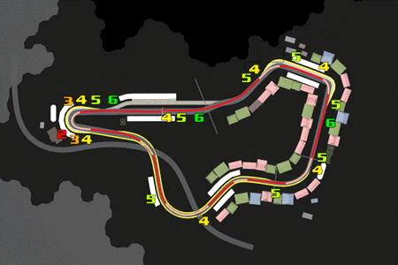
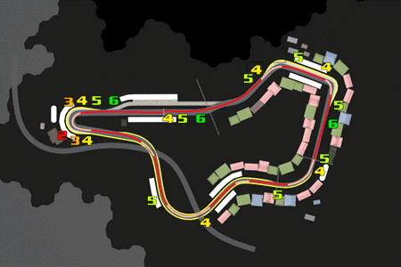
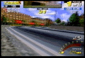
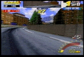
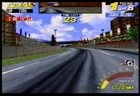
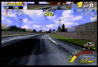
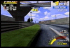
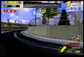

BRICK WALL TOWN
Tactics for the third stage

area with rare color = place where you should decrease your speed.

area with rare color = place where you should decrease your speed.
 |
first corner (right)
Right after the start accelerate until you reach the maximum speed. |
|  | second corner (right)
Enter from outside of the track with 45 degree angle also droping
gear down to fourth. If it goes well you could run through the curve
with a beautiful arc. In case you did not enter the corner from
inside there is a high possibility of crash so loosen your accel. |
|  | third corner (right)
When you run through two third of the straight part of the course,
drop the gear down to fourth and take a intense right turn. If you
get on the grass you do not have to decrease your speed that much
but if not you have to decrease to half the speed. If you recover
and return to the grass, speed up so that you can aim for the best
lap. |
|  | fourth corner (left)
Enter from the middle to inside, with a fifth gear tracking the grass
part of the track. Ideal is to recover and exiting from the middle. |
|  | fifth corner (right)
Drop the gear down to forth before entering the curve, and run inside
of the track through out the corner. If you are on the grass, you do
not have to let go the accel. Toward the end of the curve and you are
still on the grass set transmission up to fifth and run though. |
|  | sixth corner (left)
If you attack from the outside of the track cut the steering ahead of
time and by drifting cut into the inside of the track. From middle,
let go your accel for a bit and get on the grass and cut into inside. |
|  | (final)seventh corner (right)
When you run through two third of the straight part of the course,
drop the gear all the way down to second by using brake. Than take
a wide turn with half accel. |

|

|